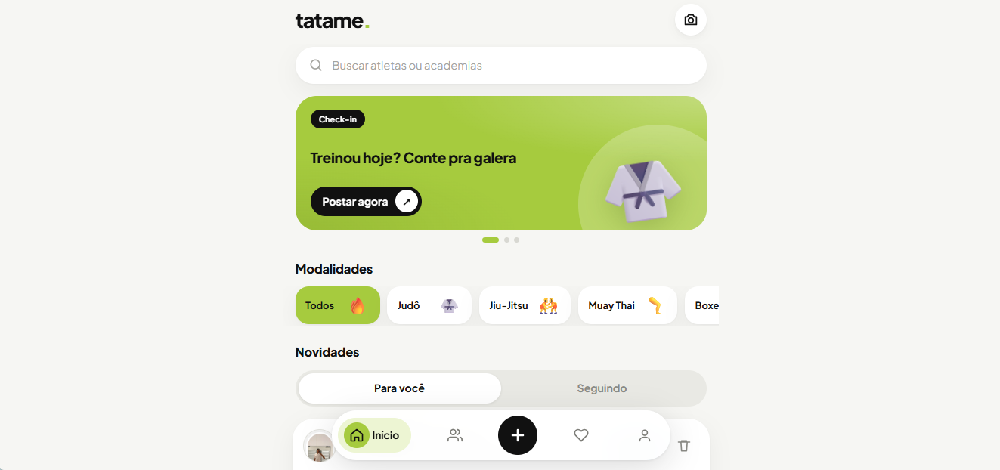
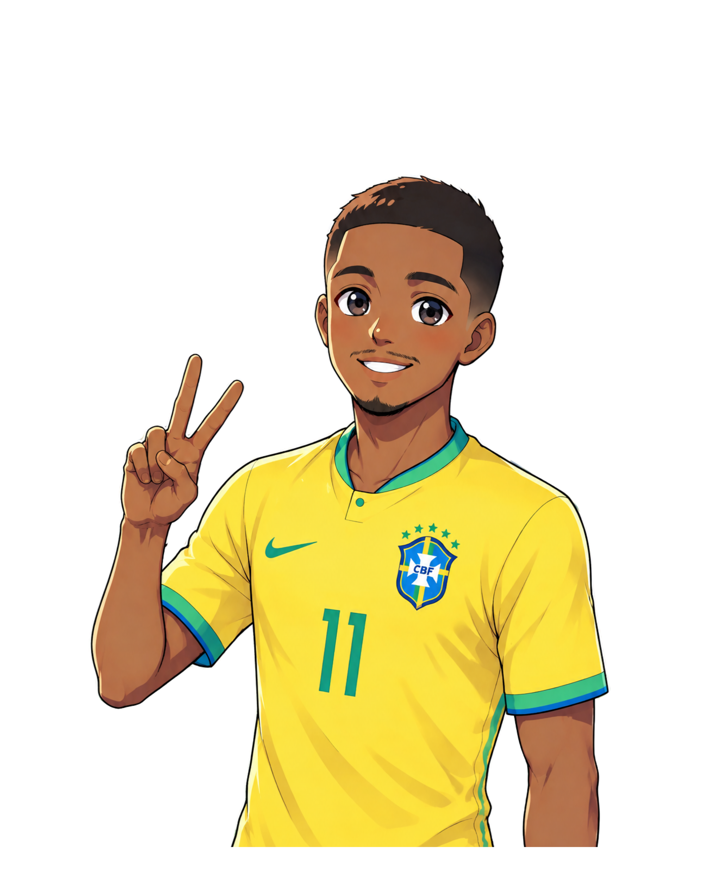
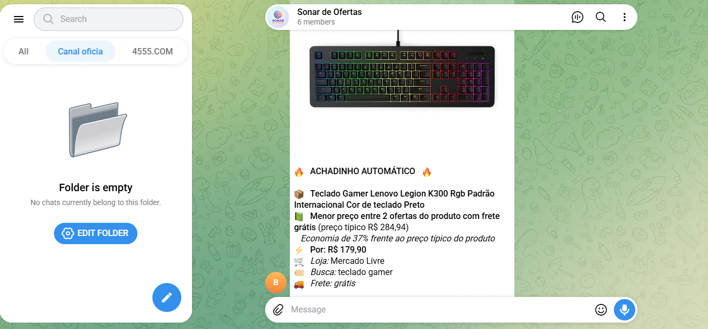
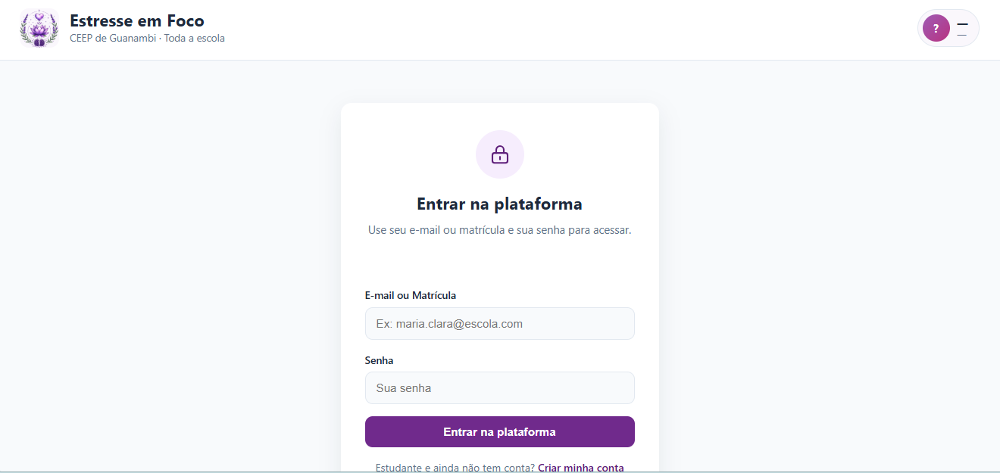

TATAME
Rede social para praticantes de artes marciais, com perfis, publicações com foto e vídeo e autenticação de usuários. Front-end leve, sem build, conectado a uma API própria.
Crio aplicações completas, da interface ao servidor: telas bonitas e centradas no usuário, com APIs e bancos de dados sólidos por trás. Código limpo e design pensado.

Um pouco da minha história e do que eu gosto de fazer.
Sou o Natan, desenvolvedor full stack da Bahia. Gosto de cuidar do projeto inteiro: da interface que a pessoa vê até a API e o banco de dados que ficam por trás, sempre buscando telas rápidas, acessíveis e agradáveis de usar. Já criei o TATAME, uma rede social para praticantes de artes marciais, e o Sonar de Ofertas, um bot de Telegram que automatiza o envio de promoções. Antes de escrever código, gosto de entender o porquê de cada decisão técnica, porque isso deixa o resultado mais limpo, simples de manter e fácil de evoluir. Estou disponível para projetos freelance e aberto a novas ideias.
Alguns trabalhos que eu fiz recentemente.

Rede social para praticantes de artes marciais, com perfis, publicações com foto e vídeo e autenticação de usuários. Front-end leve, sem build, conectado a uma API própria.

Bot de Telegram que busca ofertas do Mercado Livre e envia automaticamente em horários programados, rodando de graça com GitHub Actions.

O Estresse em foco ajuda escolas a acompanhar o desenvolvimento socioemocional dos alunos, que costuma ser difícil de medir e registrar. Ele faz isso com missões de convivência e um diário privado para o aluno, e com um painel de métricas pedagógicas para os educadores.
Código ↗Como eu posso ajudar no seu projeto.
Páginas rápidas, responsivas e fiéis ao design.
Componentes e telas interativas com JavaScript.
APIs REST, integração com banco de dados, autenticação e automações.
Do design ao deploy: front-end e back-end conectados em um só projeto.
Correção de layout, performance e acessibilidade em sites existentes.
Tem um projeto em mente? Me mande uma mensagem.